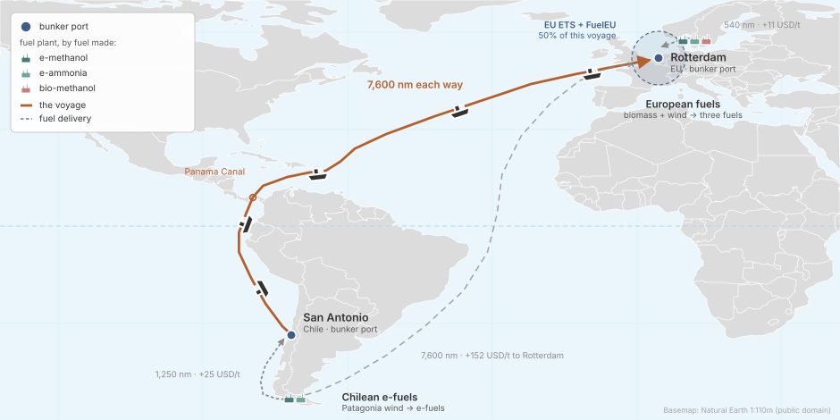
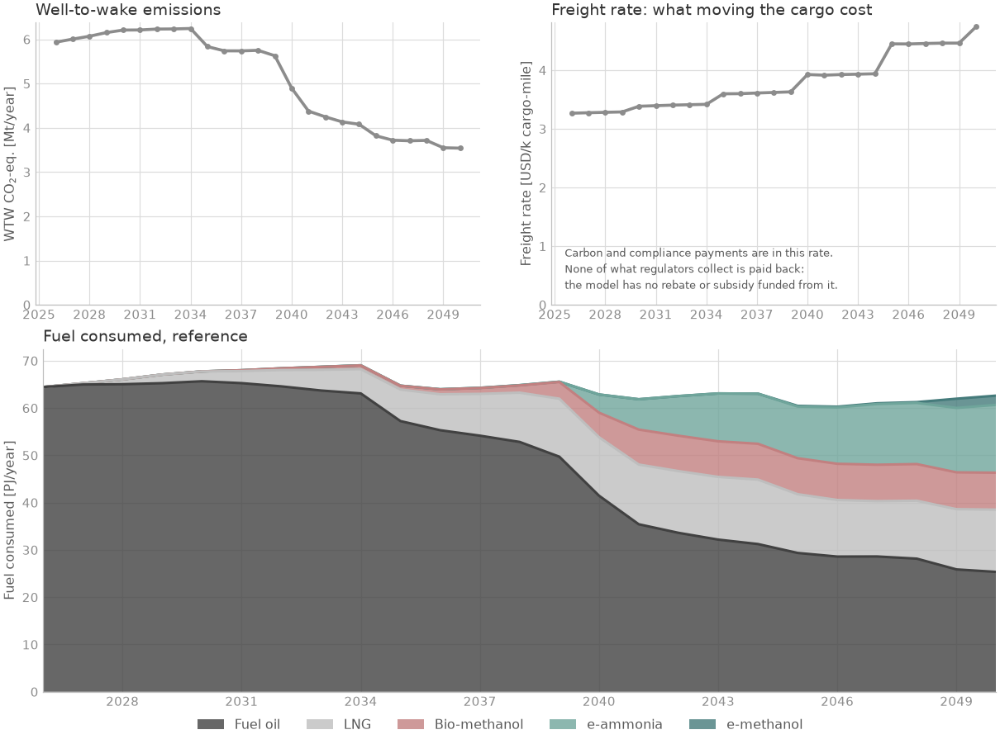
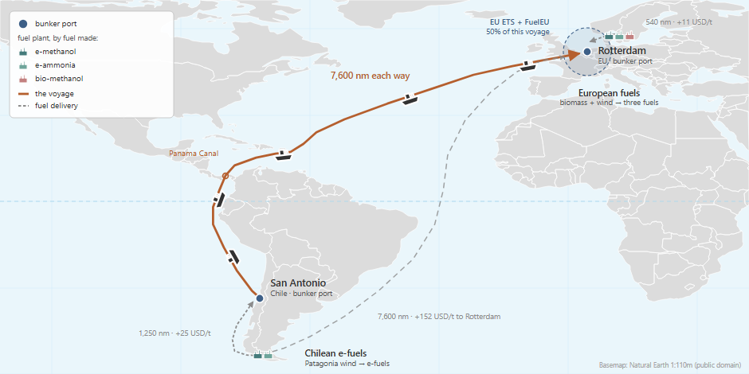
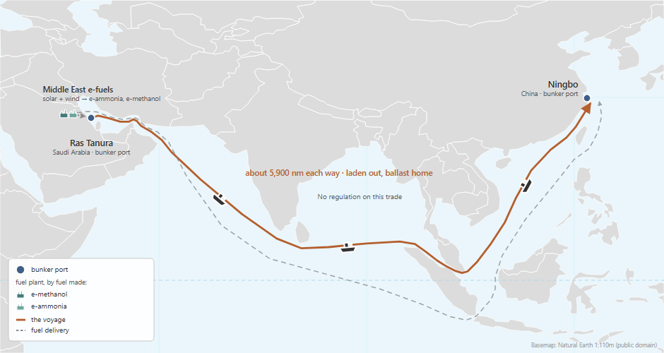
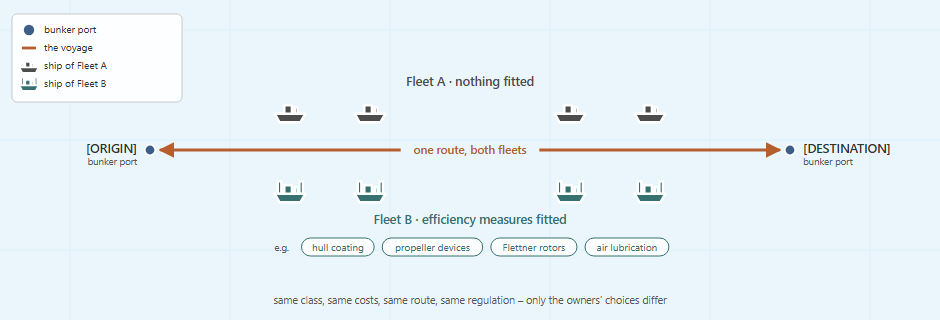

A trade route, Chile to Rotterdam#
Specific trades · deck simulations/examples/example_4/ · the case of
Session 1

Which fuels do owners choose on one long trade under EU policy?
The case#

Ships: 300 Panamax bulk carriers (about 80,000 DWT), owned by many companies, all on fuel oil in 2026. The owners can order LNG, methanol or ammonia ships, convert, and fit efficiency measures.
Route: San Antonio to Rotterdam via the Panama Canal, about 7,600 nm each way, laden out and in ballast home.
Fuels: fuel oil and LNG from the world market; e-methanol and e-ammonia made in Chile or in Europe, bio-methanol in Europe.
Policy: EU ETS and FuelEU Maritime, each covering half of the voyage.
Horizon: 2026 to 2050, yearly.
Results#

Emissions fall from 5.9 to 3.5 Mt CO2e a year, and alternative fuels make up 38.5 % of the energy burnt in 2050. Session 1 varies the prices and the policy, Session 3 shows how the deck is built and Session 4 how the model solves it.
The deck#
# SPDX-FileCopyrightText: 2026 Fonden Mærsk Mc-Kinney Møller Center for Zero Carbon Shipping
# SPDX-License-Identifier: CC-BY-4.0
# EXAMPLE 4 - Panamax fleet, Chile to Rotterdam.
DEFINE {
Load DefaultModelDefinition
# ---- fleet ----
Include "includes/fleet.inc"
Include "includes/energy_efficiencies.inc"
# ---- route ----
Include "includes/route.inc"
Include "includes/ports.inc"
Include "includes/bunker_logistics.inc"
# ---- fuel ----
Include "includes/fuel_production.inc"
Include "includes/regions.inc"
Include "includes/producer.inc"
Load DefaultEmission
# ---- regulation ----
Include "includes/eu_ets.inc"
Include "includes/fuel_eu.inc"
# ---- decision processes ----
Load DefaultCalibration
# ---- export ----
Include "includes/report.inc"
Load DefaultPlot
}
EVENTS {
Load DefaultTimeStepYearly
}
# SPDX-FileCopyrightText: 2026 Fonden Mærsk Mc-Kinney Møller Center for Zero Carbon Shipping
# SPDX-License-Identifier: CC-BY-4.0
# FLEET - Panamax bulk carriers (~80,000 DWT), four configurations of one hull.
# All four share hull, propulsion curve, cargo capacity and OPEX.
Copy Vessel "bulk_carrier_80k_dwt_ice_oil" "ship_oil"
Copy Vessel "bulk_carrier_80k_dwt_ice_methane" "ship_lng"
Copy Vessel "bulk_carrier_80k_dwt_ice_methanol" "ship_methanol"
Copy Vessel "bulk_carrier_80k_dwt_ice_ammonia" "ship_ammonia"
Fleet "copper_trade" {
Vessels = [Vessel("ship_oil"),
Vessel("ship_lng"),
Vessel("ship_methanol"),
Vessel("ship_ammonia")]
InitialVessels = 300 # Arbitrary number (represents 8% of the world Panamax fleet)
InitialSplit = [1.0, 0.0, 0.0, 0.0] # Only ship oil vessels
InitialAgeDistribution = [
Curve("age_dist_bulk_carrier_80k_dwt_oil"),
0,
0,
0
]
# Note: Orderbooks omitted for this example since the library's are sized for
# the whole world
# Library trade growth for this class: ~2.2%/yr stepping down to ~1.4%.
# Newbuilds are therefore a mix of replacement and expansion.
TradeGrowth = Forecast("trade_growth_bulk_carrier")
# Retrofit costs, figures for this class (Fleet/bulk_carrier_80k_dwt.inc).
set_fuel_conversion_cost("ship_oil", "ship_methanol", 17.5e6)
set_fuel_conversion_cost("ship_oil", "ship_ammonia", 24.1e6)
set_fuel_conversion_cost("ship_lng", "ship_ammonia", 14.2e6)
AllowSpeedManagement = TRUE
MaximumSpeedChange = 0.7
}
# SPDX-FileCopyrightText: 2026 Fonden Mærsk Mc-Kinney Møller Center for Zero Carbon Shipping
# SPDX-License-Identifier: CC-BY-4.0
# ENERGY EFFICIENCY MEASURES - all seven are the library's own technologies for
# this class, with its own costs and savings. Nothing invented here.
Fleet "copper_trade" {
Technologies = [
Technology("exhaust_gas_boiler_ae_bulk_carrier_panamax"),
Technology("flettner_rotor_bulk_carrier_panamax"),
Technology("hull_painting_bulk_carrier_panamax"),
Technology("lighting_system_bulk_carrier_panamax"),
Technology("propeller_improvement_devices_bulk_carrier_panamax"),
Technology("variable_frequency_drive_bulk_carrier_panamax"),
Technology("air_lubrication_bulk_carrier_panamax")
]
# Where the world fleet already is, from the library's uptake curves. The
# Flettner rotor and air lubrication are absent from them, so they start at zero.
set_initial_technology_share("*", "exhaust_gas_boiler_ae_bulk_carrier_panamax", Curve("uptake_exhaust_gas_boiler_ae_bulk_carrier_panamax"))
set_initial_technology_share("*", "hull_painting_bulk_carrier_panamax", Curve("uptake_hull_painting_bulk_carrier_panamax"))
set_initial_technology_share("*", "lighting_system_bulk_carrier_panamax", Curve("uptake_lighting_system_bulk_carrier_panamax"))
set_initial_technology_share("*", "propeller_improvement_devices_bulk_carrier_panamax", Curve("uptake_propeller_improvement_devices_bulk_carrier_panamax"))
set_initial_technology_share("*", "variable_frequency_drive_bulk_carrier_panamax", Curve("uptake_variable_frequency_drive_bulk_carrier_panamax"))
# Every technology is on offer from the start. Navigate's own default limit of
# 1 applies, so nothing needs saying here.
# The library defines no technology-specific rate, so this makes Navigate's
# own fallback explicit: same value, no warning, nothing invented.
TechnologyCostOfCapital = Variable("cost_of_capital_vessel")
}
# SPDX-FileCopyrightText: 2026 Fonden Mærsk Mc-Kinney Møller Center for Zero Carbon Shipping
# SPDX-License-Identifier: CC-BY-4.0
# ROUTE - San Antonio to Rotterdam and back via the Panama Canal.
# ROUND_TRIP visits the ports in the order listed; each entry in
# Distances/Speeds/CapacityUtilizations is the leg (the sailing
# to the next port) leaving the port at that index.
Vessel "ship_*" {
Route = Route("copper_route")
}
Route "copper_route" {
RouteType = ROUND_TRIP
Ports = [Port("san_antonio"), Port("rotterdam")]
# Days alongside per call, from the library's operational profile for this
# class: TimeAtSea 0.55 over 24 calls/year = 0.45 x 365 / 24.
PortDurations = [6.8, 6.8]
# The distances for this example are invented since this route geography
# is not included in the Navigate Assumption.
Distances = [7600, 7600]
# Modal service speed from the library's operational profile for this ship class.
Speeds = [11.5, 11.5]
# Laden out, ballast home.
CapacityUtilizations = [1.0, 0.0]
}
# SPDX-FileCopyrightText: 2026 Fonden Mærsk Mc-Kinney Møller Center for Zero Carbon Shipping
# SPDX-License-Identifier: CC-BY-4.0
# PORTS - what can be bunkered where. All three alternative fuels are bunkerable at
# both ports; a fuel is shipped to the port that did not produce it, the same way
# Chilean e-ammonia reaches Rotterdam.
# Delivered price is production cost plus transport, set in bunker_logistics.inc.
Port "san_antonio" {
set_bunkering_allowed("methanol_electro", TRUE)
set_bunkering_allowed("ammonia_electro", TRUE)
set_bunkering_allowed("methanol_bio", TRUE)
}
Port "rotterdam" {
set_bunkering_allowed("methanol_electro", TRUE)
set_bunkering_allowed("ammonia_electro", TRUE)
set_bunkering_allowed("methanol_bio", TRUE)
}
Port "*" {
# the two fossil fuels are treated as globally traded and available anywhere
set_bunkering_allowed("fossil_fuel_oil", TRUE)
set_bunkering_allowed("liquefied_natural_gas", TRUE)
# Fossil prices and upstream emissions are taken as given rather than built
# bottom-up from a production pathway.
set_bunker_price_overwrite("fossil_fuel_oil", Forecast("fossil_fuel_oil_price_global"))
set_bunker_wtt_overwrite("fossil_fuel_oil", "carbon_dioxide", Forecast("fossil_fuel_oil_wtt_carbon_dioxide"))
set_bunker_price_overwrite("liquefied_natural_gas", Forecast("liquefied_natural_gas_price_global"))
set_bunker_wtt_overwrite("liquefied_natural_gas", "carbon_dioxide", Forecast("liquefied_natural_gas_wtt_carbon_dioxide"))
set_bunker_wtt_overwrite("liquefied_natural_gas", "methane", Forecast("liquefied_natural_gas_wtt_methane"))
# cost of physically getting the fuel aboard, USD/ton
set_handling_cost("fossil_fuel_oil", Variable("handling_cost_oil"))
set_handling_cost("liquefied_natural_gas", Variable("handling_cost_lng"))
set_handling_cost("methanol_electro", Variable("handling_cost_methanol"))
set_handling_cost("methanol_bio", Variable("handling_cost_methanol"))
set_handling_cost("ammonia_electro", Variable("handling_cost_ammonia"))
}
# Values are invented for this example.
Variable "handling_cost_oil" {
Value = 8
}
Variable "handling_cost_lng" {
Value = 15
}
Variable "handling_cost_methanol" {
Value = 18
}
Variable "handling_cost_ammonia" {
Value = 25
}
# SPDX-FileCopyrightText: 2026 Fonden Mærsk Mc-Kinney Møller Center for Zero Carbon Shipping
# SPDX-License-Identifier: CC-BY-4.0
# BUNKER LOGISTICS - production site to bunker port.
# LiquidMarketFuels are treated as global commodities: quoted price, no plant,
# no producer, no logistics chain. Everything else picks up distance x rate.
BunkerLogistics {
LiquidMarketFuels = [Fuel("fossil_fuel_oil"), Fuel("liquefied_natural_gas")]
# The values have been invented for this example:
# nautical miles from the production region to each port
set_distance("americas", "san_antonio", 1250)
set_distance("americas", "rotterdam", 7600)
set_distance("europe", "rotterdam", 540)
set_distance("europe", "san_antonio", 7600)
# USD per ton per nautical mile
set_transport_cost("*", 0.02)
}
# SPDX-FileCopyrightText: 2026 Fonden Mærsk Mc-Kinney Møller Center for Zero Carbon Shipping
# SPDX-License-Identifier: CC-BY-4.0
# FUEL PRODUCTION - five fuels for four ships; both methanols feed one ship.
#
# Only the siting and financing are set here (region, electricity source and
# cost of capital, which Import Plant does not bring: the library sets it in
# DefaultPlant). Lead times, lifetimes, capacities and process economics come
# from the library.
# Feedstock ceilings for the two methanols are set in producer.inc.
# ---- fossil (global commodities, no production chain modelled) --------------
Import Fuel "fossil_fuel_oil"
Import Fuel "liquefied_natural_gas"
# ---- Chilean e-methanol -----------------------------------------------------
Import Fuel "methanol_electro"
Import Plant "plant_methanol_electro_alkaline"
Plant "plant_methanol_electro_alkaline" {
Region = Region("americas")
Source = Source("renewable") # dedicated wind, not the Chilean grid
CostOfCapital = Forecast("cost_of_capital_plant_electro_americas")
}
Import Process "methanol_synthesis_electro_alkaline"
Import Process "hydrogen_electro_alkaline"
Import Process "electrolysis_stack_alkaline"
Import Feedstock "carbon_dioxide_biogenic"
# ---- Chilean e-ammonia ------------------------------------------------------
Import Fuel "ammonia_electro"
Import Plant "plant_ammonia_electro_alkaline"
Plant "plant_ammonia_electro_alkaline" {
Region = Region("americas")
Source = Source("renewable")
CostOfCapital = Forecast("cost_of_capital_plant_electro_americas")
}
Import Process "ammonia_synthesis_electro_alkaline"
Import Process "nitrogen_air_separation"
# ---- European bio-methanol --------------------------------------------------
Import Fuel "methanol_bio"
Import Plant "plant_methanol_bio_gasification"
Plant "plant_methanol_bio_gasification" {
Region = Region("europe")
Source = Source("grid") # a biomass plant draws from the grid
CostOfCapital = Forecast("cost_of_capital_plant_bio_europe")
}
Import Process "methanol_synthesis_bio_gasification"
Import Feedstock "feedstock_biomethanol_gasification"
# ---- European e-fuels -------------------------------------------------------
# The same library pathways as Chile, sited in Europe. Copy, not Import: the
# Chilean nodes already carry these library names and are sited in americas.
# A second electrolyser route for e-ammonia was tried here, to give one fuel two
# competing plants under one producer. It stalls the 2038 solve, so it is left out.
Copy Plant "plant_methanol_electro_alkaline" "plant_methanol_electro_alkaline_europe"
Plant "plant_methanol_electro_alkaline_europe" {
Region = Region("europe")
Source = Source("renewable")
CostOfCapital = Forecast("cost_of_capital_plant_electro_europe")
}
Copy Plant "plant_ammonia_electro_alkaline" "plant_ammonia_electro_alkaline_europe"
Plant "plant_ammonia_electro_alkaline_europe" {
Region = Region("europe")
Source = Source("renewable")
CostOfCapital = Forecast("cost_of_capital_plant_electro_europe")
}
# ---- shared inputs ----------------------------------------------------------
Import Feedstock "demineralized_water"
Import Source "renewable"
Import Source "grid"
# SPDX-FileCopyrightText: 2026 Fonden Mærsk Mc-Kinney Møller Center for Zero Carbon Shipping
# SPDX-License-Identifier: CC-BY-4.0
# REGIONS - where fuels get made, and the economics of making them.
# All cost curves are referenced by name from the assumptions library.
#
# The methanol synthesis steps carry negative CO2 terms: the molecule locks up
# captured carbon, so production is a WTT sink and combustion releases it again.
Region "americas" {
set_source_opex("renewable", Forecast("electricity_cost_americas_mid"))
set_source_opex("grid", Forecast("electricity_cost_americas_mid"))
set_source_wtt("grid", "carbon_dioxide", Forecast("grid_emissions_americas"))
}
Region "europe" {
set_source_opex("renewable", Forecast("electricity_cost_europe_mid"))
set_source_opex("grid", Forecast("electricity_cost_europe_mid"))
set_source_wtt("grid", "carbon_dioxide", Forecast("grid_emissions_europe"))
}
# Production economics that do not vary by region, so a plant can be sited
# anywhere.
Region "*" {
# ---- feedstocks ----
set_feedstock_cost("demineralized_water", Forecast("demineralized_water_cost"))
set_feedstock_cost("carbon_dioxide_biogenic", Forecast("carbon_dioxide_biogenic_cost"))
set_feedstock_cost("feedstock_biomethanol_gasification", Forecast("feedstock_biomethanol_gasification_cost"))
set_feedstock_wtt("carbon_dioxide_biogenic", "carbon_dioxide", Forecast("carbon_dioxide_biogenic_capture_rate"))
# ---- hydrogen, shared by both e-fuels ----
# Timetable rather than Forecast: cost depends on year and on plant size.
set_process_capex("electrolysis_stack_alkaline", Timetable("electrolysis_stack_alkaline_capex"))
set_process_opex("electrolysis_stack_alkaline", Timetable("electrolysis_stack_alkaline_opex"))
set_process_energy("electrolysis_stack_alkaline", Forecast("electrolysis_stack_alkaline_energy"))
set_process_lifetime("electrolysis_stack_alkaline", Forecast("electrolysis_stack_alkaline_lifetime"))
set_process_replacement("electrolysis_stack_alkaline", Forecast("electrolysis_stack_alkaline_replacement"))
set_process_capex("hydrogen_electro_alkaline", Timetable("hydrogen_electro_alkaline_capex"))
set_process_opex("hydrogen_electro_alkaline", Timetable("hydrogen_electro_alkaline_opex"))
set_process_energy("hydrogen_electro_alkaline", Forecast("hydrogen_electro_alkaline_energy"))
set_process_lifetime("hydrogen_electro_alkaline", Forecast("hydrogen_electro_alkaline_lifetime"))
set_process_replacement("hydrogen_electro_alkaline", Forecast("hydrogen_electro_alkaline_replacement"))
# ---- e-methanol: hydrogen + biogenic CO2 ----
set_process_capex("methanol_synthesis_electro_*", Timetable("methanol_synthesis_electro_capex"))
set_process_opex("methanol_synthesis_electro_*", Timetable("methanol_synthesis_electro_opex"))
set_process_energy("methanol_synthesis_electro_*", Forecast("methanol_synthesis_electro_energy"))
set_process_wtt("methanol_synthesis_electro_*", "carbon_dioxide",
<Variable("methanol_carbon_dioxide_conversion") - Variable("carbon_dioxide_per_methanol")>)
# ---- e-ammonia: hydrogen + nitrogen from air ----
set_process_capex("ammonia_synthesis_electro_*", Timetable("ammonia_synthesis_capex"))
set_process_opex("ammonia_synthesis_electro_*", Timetable("ammonia_synthesis_opex"))
set_process_energy("ammonia_synthesis_electro_*", Forecast("ammonia_synthesis_energy"))
# ---- bio-methanol: gasified biomass ----
set_process_capex("methanol_synthesis_bio_gasification", Forecast("methanol_synthesis_bio_gasification_capex"))
set_process_opex("methanol_synthesis_bio_gasification", Forecast("methanol_synthesis_bio_gasification_opex"))
set_process_energy("methanol_synthesis_bio_gasification", Forecast("methanol_synthesis_bio_gasification_energy"))
set_process_wtt("methanol_synthesis_bio_gasification", "carbon_dioxide", <-Variable("carbon_dioxide_per_methanol")>)
# ---- plant to quayside within a region ----
set_transport_cost("truck", 0.0)
set_transport_wtt("truck", "carbon_dioxide", Forecast("truck_emissions"))
}
# A command taking a node name as a string key needs that node to exist already,
# so this is imported rather than auto-resolved like a Fuel() reference.
Import Transport "truck"
# SPDX-FileCopyrightText: 2026 Fonden Mærsk Mc-Kinney Møller Center for Zero Carbon Shipping
# SPDX-License-Identifier: CC-BY-4.0
# PRODUCERS - the agents that decide whether to build another plant.
Producer "producer_efuel" {
Plants = [Plant("plant_methanol_electro_alkaline"),
Plant("plant_ammonia_electro_alkaline"),
Plant("plant_methanol_electro_alkaline_europe"),
Plant("plant_ammonia_electro_alkaline_europe")]
MaximumDevelopment = <Forecast("epc_global_capacity_mid") * Forecast("epc_global_share_shipping")>
# Ceiling on biogenic CO2, the feedstock both its e-methanol plants draw on.
set_feed_constraint("carbon_dioxide_biogenic", <Forecast("carbon_dioxide_biogenic_availability_flat") * Forecast("carbon_dioxide_biogenic_share_shipping") * Variable("trade_share_biogenic_carbon_dioxide")>)
}
Producer "producer_biofuel" {
Plants = [Plant("plant_methanol_bio_gasification")]
MaximumDevelopment = <Forecast("epc_global_capacity_mid") * Forecast("epc_global_share_shipping")>
# Ceiling on gasifiable biomass.
set_feed_constraint("feedstock_biomethanol_gasification", <Forecast("feedstock_biomethanol_gasification_availability") * Forecast("feedstock_biomethanol_gasification_share_shipping") * Variable("trade_share_gasifiable_biomass")>)
}
# The library's feedstock forecasts are global and its *_share_shipping factors
# are the whole sector's slice. This deck is 300 ships on one trade, not the
# world fleet, so each producer gets a slice of that. Both shares are
# invented for this example.
Variable "trade_share_gasifiable_biomass" {
Value = 0.01
}
Variable "trade_share_biogenic_carbon_dioxide" {
Value = 0.003
}
# INVENTED: the biogenic CO2 pool held flat at the library's 2026 value
# (carbon_dioxide_biogenic_availability on 01-01-2026, 91.55 Mt/yr); the library
# grows it to 350 Mt/yr by 2050.
Forecast "carbon_dioxide_biogenic_availability_flat" {
Table = [
"01-01-2026" 91.55e6
"01-01-2050" 91.55e6
]
Extrapolate = FLAT
}
# SPDX-FileCopyrightText: 2026 Fonden Mærsk Mc-Kinney Møller Center for Zero Carbon Shipping
# SPDX-License-Identifier: CC-BY-4.0
# EU ETS - absolute price on CO2-equivalent burned on board, no free allowance.
#
# The coverage fractions are applied PER LEG (one sailing
# from one port to the next), not to the round trip. Both legs
# here are inter-jurisdiction, so both count at 50%. Port stays are classified
# by their own port, so Rotterdam counts in full and San Antonio not at all.
Regulation "eu_ets" {
Measure = ABSOLUTE
Scheme = INDIVIDUAL
Scope = TTW
IncludeSlip = FALSE # methane slip is carried in the TTW methane factors
Emissions = [Emission("carbon_dioxide"), Emission("methane"), Emission("nitrous_oxide")]
Fuels = Fuel("*")
# Rotterdam is the only EU port on this route
Jurisdiction = [Port("rotterdam")]
IntraFraction = 1 # both ends in the EU
InterFraction = 0.5 # one end in the EU
ExtraFraction = 0 # neither end in the EU
RemedialCost = <Forecast("eu_ets_carbon_credit_price") * Forecast("eu_ets_maritime_phase_in")>
# no free allocation: every covered ton is paid for
set_vessel_threshold("*", 0.)
set_include_vessel("*", TRUE)
set_global_warming_potential("carbon_dioxide", 1)
set_global_warming_potential("methane", 28)
set_global_warming_potential("nitrous_oxide", 265)
# Emission factors follow MRV Maritime Regulation Annex I. Bio and electro
# fuels are assumed to meet the >65% criterion, so are zero-rated for CO2 but
# still take "highest in class" methane and nitrous oxide.
set_fuel_ttw("fossil_fuel_oil", "carbon_dioxide", Variable("eu_default_diesel_carbon_dioxide"))
set_fuel_ttw("fossil_fuel_oil", "methane", <Variable("eu_default_diesel_ice_methane") * Forecast("eu_ets_ghg_phase_in")>)
set_fuel_ttw("fossil_fuel_oil", "nitrous_oxide", <Variable("eu_default_diesel_ice_nitrous_oxide") * Forecast("eu_ets_ghg_phase_in")>)
set_fuel_ttw("liquefied_natural_gas", "carbon_dioxide", Variable("eu_default_methane_carbon_dioxide"))
set_fuel_ttw("liquefied_natural_gas", "methane", <Forecast("eu_default_methane_slip") * Forecast("eu_ets_ghg_phase_in")>)
set_fuel_ttw("liquefied_natural_gas", "nitrous_oxide", <Variable("eu_default_methane_ice_nitrous_oxide") * Forecast("eu_ets_ghg_phase_in")>)
set_fuel_ttw("methanol_electro", "carbon_dioxide", 0)
set_fuel_ttw("methanol_electro", "methane", <Variable("eu_default_diesel_ice_methane") * Forecast("eu_ets_ghg_phase_in")>)
set_fuel_ttw("methanol_electro", "nitrous_oxide", <Variable("eu_default_diesel_ice_nitrous_oxide") * Forecast("eu_ets_ghg_phase_in")>)
set_fuel_ttw("methanol_bio", "carbon_dioxide", 0)
set_fuel_ttw("methanol_bio", "methane", <Variable("eu_default_diesel_ice_methane") * Forecast("eu_ets_ghg_phase_in")>)
set_fuel_ttw("methanol_bio", "nitrous_oxide", <Variable("eu_default_diesel_ice_nitrous_oxide") * Forecast("eu_ets_ghg_phase_in")>)
set_fuel_ttw("ammonia_electro", "carbon_dioxide", 0)
set_fuel_ttw("ammonia_electro", "methane", <Variable("eu_default_diesel_ice_methane") * Forecast("eu_ets_ghg_phase_in")>)
set_fuel_ttw("ammonia_electro", "nitrous_oxide", <Variable("eu_default_diesel_ice_nitrous_oxide") * Forecast("eu_ets_ghg_phase_in")>)
}
# SPDX-FileCopyrightText: 2026 Fonden Mærsk Mc-Kinney Møller Center for Zero Carbon Shipping
# SPDX-License-Identifier: CC-BY-4.0
# FUELEU MARITIME - caps WTW greenhouse gas intensity, tightening over time.
#
# The e-fuels get no default set_fuel_wtt. Instead, Navigate calculates
# their upstream intensity from the production chain in regions.inc, so the
# power price at each site feeds their FuelEU score. The fossil fuels and
# bio-methanol instead use the regulation's own defaults.
#
# Same coverage geography as eu_ets.inc.
Regulation "fuel_eu" {
Measure = INTENSITY
Scheme = FLEXIBLE # pooled and banked across years, unlike the ETS
Scope = WTW
IncludeSlip = FALSE # methane slip is carried in the TTW methane factors
Emissions = [Emission("carbon_dioxide"), Emission("methane"), Emission("nitrous_oxide")]
Fuels = Fuel("*")
Jurisdiction = [Port("rotterdam")]
IntraFraction = 1
InterFraction = 0.5
ExtraFraction = 0
RemedialCost = Variable("fuel_eu_remedial_cost")
SharedThreshold = Forecast("fuel_eu_target_reduction")
set_include_vessel("*", TRUE)
set_global_warming_potential("carbon_dioxide", 1)
set_global_warming_potential("methane", 25)
set_global_warming_potential("nitrous_oxide", 298)
# ---- fossil fuel oil: regulation default WTT ----
set_fuel_wtt("fossil_fuel_oil", "*", 0)
set_fuel_wtt("fossil_fuel_oil", "carbon_dioxide", Variable("fuel_eu_default_wtt_fossil_fuel_oil"))
set_fuel_ttw("fossil_fuel_oil", "carbon_dioxide", Variable("eu_default_diesel_carbon_dioxide"))
set_fuel_ttw("fossil_fuel_oil", "methane", Variable("eu_default_diesel_ice_methane"))
set_fuel_ttw("fossil_fuel_oil", "nitrous_oxide", Variable("eu_default_diesel_ice_nitrous_oxide"))
# ---- LNG ----
set_fuel_wtt("liquefied_natural_gas", "*", 0)
set_fuel_wtt("liquefied_natural_gas", "carbon_dioxide", Variable("fuel_eu_default_wtt_liquefied_natural_gas"))
set_fuel_ttw("liquefied_natural_gas", "carbon_dioxide", Variable("eu_default_methane_carbon_dioxide"))
set_fuel_ttw("liquefied_natural_gas", "methane", Forecast("eu_default_methane_slip"))
set_fuel_ttw("liquefied_natural_gas", "nitrous_oxide", Variable("eu_default_methane_ice_nitrous_oxide"))
# ---- bio-methanol: regulation default WTT ----
set_fuel_wtt("methanol_bio", "*", 0)
set_fuel_wtt("methanol_bio", "carbon_dioxide", Variable("fuel_eu_default_wtt_methanol_bio"))
set_fuel_ttw("methanol_bio", "carbon_dioxide", Variable("fuel_eu_default_methanol_ice_carbon_dioxide"))
set_fuel_ttw("methanol_bio", "methane", Variable("eu_default_diesel_ice_methane"))
set_fuel_ttw("methanol_bio", "nitrous_oxide", Variable("eu_default_diesel_ice_nitrous_oxide"))
# ---- e-methanol: WTT calculated, not set ----
set_fuel_ttw("methanol_electro", "carbon_dioxide", Variable("fuel_eu_default_methanol_ice_carbon_dioxide"))
set_fuel_ttw("methanol_electro", "methane", Variable("eu_default_diesel_ice_methane"))
set_fuel_ttw("methanol_electro", "nitrous_oxide", Variable("eu_default_diesel_ice_nitrous_oxide"))
# ---- e-ammonia: WTT calculated; no carbon in the molecule ----
set_fuel_ttw("ammonia_electro", "carbon_dioxide", 0)
set_fuel_ttw("ammonia_electro", "methane", Variable("eu_default_diesel_ice_methane"))
set_fuel_ttw("ammonia_electro", "nitrous_oxide", Variable("eu_default_diesel_ice_nitrous_oxide"))
}
# SPDX-FileCopyrightText: 2026 Fonden Mærsk Mc-Kinney Møller Center for Zero Carbon Shipping
# SPDX-License-Identifier: CC-BY-4.0
# REPORT - Excel export, for inspecting the numbers without the Python API.
#
# A CamelCase property resolves to the matching getter on the node's profile:
# InvestmentFreightRate reads profile.get_investment_freight_rate(). Anything
# with a getter on the profile can be exported this way.
Report "output" {
Directory = "./reports"
# transport cost, USD/cargo-mile. Investment = forward-looking levelized cost,
# the number the choice model compares; Instantaneous = what the year cost.
add_vessel_property("ship_*", InvestmentFreightRate)
add_vessel_property("ship_*", InstantaneousFreightRate)
# what the cargo owner pays per year, USD
add_vessel_property("ship_*", CargoCharterRate)
# operational response: did it slow down instead of switching fuel?
add_vessel_property("ship_*", ActualSpeed)
add_vessel_property("ship_*", CargoMiles)
# fleet composition: how many ships of each type exist, and what got ordered
add_fleet_property("copper_trade", ExistingVessels)
add_fleet_property("copper_trade", Newbuilds)
add_fleet_property("copper_trade", FuelConversions)
# energy efficiency. TechnologyUptake is keyed by (vessel, technology), so it
# needs a reduction; the third argument is positional, not `reduce=`.
add_fleet_property("copper_trade", TechnologyUptake, BOTH)
add_fleet_property("copper_trade", TechnologyEnergySaving)
# where the money went
add_fleet_property("copper_trade", FuelExpenses)
add_fleet_property("copper_trade", RegulationExpenses)
add_fleet_property("copper_trade", RemedialExpenses)
# delivered bunker price per unit of energy, by port
add_port_property("*", BunkerIntensityPrice)
}
Build it with an AI assistant#
This is the model of the specific-trade family: a new trade between named ports starts from its full prompt. The variants below change only what their list says. Session 5 shows how to use them.
Full prompt for this trade route
The study. 300 Panamax bulk carriers (about 80,000 DWT) carry copper concentrate from San Antonio, Chile, to Rotterdam via the Panama Canal, 2026 to 2050. They can switch to LNG, methanol or ammonia ships, and fit efficiency measures; e-fuels are made in Chile or in Europe; EU ETS and FuelEU Maritime cover half of the voyage. It is the case of Session 1, which Session 5 works through step by step, and the template of the specific-trade family.

Tested: built by handing it to two Claude models (Opus and Sonnet) with no other instructions: both decks ran without warnings or errors, and both came within 0.2 % of the results of Session 1. Session 5’s start-up prompt, carried through on a new case (Handysize bulk carriers, Vancouver to Yokohama, under the global fuel standard) and taking this entry as its model, built cleanly first time on Opus, Sonnet and Haiku (2026-10-28), with the same answer on all three.
You are helping me build and run a simulation deck for Navigate, the shipping decarbonisation model in this repository. Write the files yourself; do not only describe them.
Before writing anything, read docs/workshop/building-a-deck.md in the Navigate
repository and follow it:
it holds the rules every deck follows and the traps earlier builds fell into.
simulations/examples/example_4/ is this case, already built: take its
structure, and the numbers this prompt gives. Where this prompt and the guide
disagree, this prompt wins.
GETTING NAVIGATE RUNNING (do this first)
- Navigate is the repository https://github.com/zerocarbonshipping/navigate-zcs.
If you were not opened in it, look for it on this machine (a folder usually
named navigate-zcs, holding README.md, navigate/ and assumptions/), or ask me
where it is. If it is not on this machine yet, tell me, and propose cloning
it (or downloading the zip from GitHub). Work from the repository root from
then on.
- Check whether Navigate is installed, from the repository root:
python -m pip show navigate-zcs
python -m navigate --help
If both work, go on to the deck.
- If not, the installation steps are in README.md (section "Installation"):
Python 3.12, ideally in its own environment (venv or conda), then
python -m pip install .
from the repository root. The README also has the fixes for the two common
Windows errors (PowerShell refusing to activate a venv, and pip.exe "Access is
denied"). A slower, beginner's walk-through with VS Code is in
docs/tutorials/getting_started.md, also online at
https://zerocarbonshipping.github.io/navigate-zcs/tutorials/getting_started.html
- Show me the commands and wait for my go-ahead before you install, upgrade or
create anything. No extra solver is needed: Navigate comes with HiGHS. Skip the
optional Gurobi extra unless I say I have a full Gurobi licence.
HOW NAVIGATE WORKS (read this before writing anything)
- A deck is one .nav file plus the .inc files it includes. The syntax is explained
in docs/reference_manual/overview.md, and every node type (Fleet, Vessel, Route,
Port, Fuel, Plant, Producer, Regulation, ...) has its own page in
docs/reference_manual/.
- assumptions/ is the data library. `Load DefaultCalibration` reads the module file
assumptions/modules/installation/default_calibration.inc. `Import Fuel "methanol_bio"`
reads one node from assumptions/defaults/installation/Fuel/methanol_bio.inc.
`Copy Vessel "a" "b"` imports node "a" from the library under the new name "b".
- simulations/examples/example_1 to example_4 are complete decks that run: read
them for syntax.
- Run a deck from the repository root, in the Python environment where Navigate
was installed from this repository, with:
python -m navigate <path to the .nav file> -d ./assumptions
(`python -m navigate` run from the repository root always uses this
repository's code; the shorter `navigate` command may point to another copy.)
- A run writes a .log file next to the .nav. The end of the .log has a "Log
summary" table with the number of warnings and errors. Built as described
here, this deck runs with no warnings at all: report any you get. `Load DefaultPlot` in the
.nav DEFINE block also writes the charts to plots/ and plots_analysis/.
If you cannot run terminal commands, give me the exact command, wait for me to
paste back the end of the output, and fix whatever it reports.
- To get results as numbers, add `Load DefaultReport` to the .nav DEFINE block.
The run then also writes plots/<deck name>_report_default.xlsx. Its "Global"
sheet has one row per year, one ConsumedEnergy column per fuel (GJ per year;
the fuel name is in the third header row) and the fleet's emissions
(TotalEquivalentWTW, t CO2e per year).
THE DECK
Build it in a new folder, simulations/user/my_simulation/, with the .nav file
my_simulation.nav and one .inc file per topic in includes/. If that folder
already exists, use my_simulation_2 (then _3, ...) instead, and tell me which.
Write nothing outside that folder: do not change, move or delete any file that
is already in the repository.
THE CASE
Panamax bulk carriers (~80,000 DWT) carrying copper concentrate from San
Antonio, Chile, to Rotterdam via the Panama Canal, 2026 to 2050, yearly steps.
The fleet starts entirely on fuel oil. The model decides which fuel to bunker
and where, how fast to sail, which ships to retrofit or order, and which
efficiency measures to fit. Fuel producers decide where to build plants.
1. Fleet (one Fleet node, "copper_trade")
- Four ship designs, copied from the library's vessels for this class:
bulk_carrier_80k_dwt_ice_oil, _ice_methane, _ice_methanol and _ice_ammonia,
renamed ship_oil, ship_lng, ship_methanol and ship_ammonia.
- 300 ships in 2026 (INVENTED: about 8 % of the world Panamax fleet), all
ship_oil, with the library's age distribution for the oil ship
(Curve("age_dist_bulk_carrier_80k_dwt_oil")) and zero for the other three.
- No orderbook (leave Orderbook out): the library's is sized for the whole
world fleet.
- Trade growth: the library's Forecast("trade_growth_bulk_carrier").
- Retrofits: the three conversion costs in
assumptions/defaults/installation/Fleet/bulk_carrier_80k_dwt.inc (oil to
methanol, oil to ammonia, LNG to ammonia), restated for the new ship names.
- Speed management: as the same Fleet file sets it (AllowSpeedManagement,
MaximumSpeedChange).
- Efficiency measures: the seven library technologies for this class (the
files ending in _bulk_carrier_panamax in
assumptions/defaults/installation/Technology/). Start each at the library's
uptake curve (Curve("uptake_<technology name>")) where one exists. Two
have none: leave their initial share unset, which means zero (a plain 0
is rejected, it must be a Curve). Set TechnologyCostOfCapital =
Variable("cost_of_capital_vessel").
2. Route
- ROUND_TRIP between San Antonio and Rotterdam, sailing laden out and in
ballast home (capacity utilisation 1 then 0).
- 7,600 nautical miles each way (INVENTED: the library has no distances).
- Speeds and days in port from the library's operational profile for this
class, assumptions/defaults/installation/Route/operational_profile_bulk_carrier_80k_dwt.inc:
the most common speed (the one with the largest ConditionDistribution
share, laden and ballast alike), and days in port per call = (1 - TimeAtSea) x 365 / total
port calls per year. Show that arithmetic in a comment.
- Do not use the profile's abstract ports (port_global, port_europe): the two
ports are your own nodes, san_antonio and rotterdam.
3. Fuels and where they come from
- Fuel oil and LNG: global commodities. Bunkerable at every port, priced with
the library's global price forecasts and given the library's upstream (WTT)
emissions, both as bunker overwrites on the ports. No plant, producer or
logistics chain for them.
- E-methanol and e-ammonia: library plants on alkaline electrolysis, on
dedicated renewable power. One plant of each in the "americas" region
(Chile) and one of each in "europe". The European ones are Copy Plant of the
library plants, because the imported ones already carry the library names.
The library Plant files carry no region or power source: set Region and
Source on every plant yourself.
- Bio-methanol: the library's gasification plant, in europe only, on grid power.
- Give every plant the library's cost of capital for its kind and region,
as assumptions/modules/installation/default_plant.inc does
(Forecast("cost_of_capital_plant_electro_americas"), ..._electro_europe,
..._bio_europe). Import Plant does not bring it, and a plant without one
is silently financed at 0 %.
- All three alternative fuels can be bunkered at both ports.
- Regions: declare "americas" and "europe" yourself, with the electricity
cost and grid emission lines of the library's Region files. Do not Import
them: they also price feedstocks this deck does not have, and the parse
fails. The production economics (feedstock costs, process capex,
opex, energy, lifetimes) are the library's, as
assumptions/modules/installation/default_region.inc sets them for every
region: restate only the lines for the processes and feedstocks your plants
use. Within a region, fuel moves by truck at zero cost, with the library's
truck emissions.
- Two producers: one owns the four e-fuel plants, one owns the bio-methanol
plant. Each may build up to Forecast("epc_global_capacity_mid") x
Forecast("epc_global_share_shipping") a year.
- Feedstock ceilings: the library's availability x its shipping share x a
trade share, as set_feed_constraint on the producer that uses it:
biogenic CO2 (e-methanol), trade share 0.003 (INVENTED). Hold its pool
flat at the library's 2026 value: declare Forecast
"carbon_dioxide_biogenic_availability_flat", 91.55e6 t a year from
2026 to 2050 (INVENTED), and use it in place of the library's
carbon_dioxide_biogenic_availability, which grows to 350e6 by 2050.
gasifiable biomass (bio-methanol), trade share 0.01 (INVENTED)
The library's shares are for all of shipping; this deck is 300 ships on one
trade.
4. Bunkering costs (all INVENTED; BunkerLogistics takes plain numbers)
- Distance from production region to port, nautical miles:
americas to san_antonio 1,250, americas to rotterdam 7,600,
europe to rotterdam 540, europe to san_antonio 7,600
- Transport cost 0.02 USD per ton per nautical mile, for every fuel.
- Handling cost at the port, USD per ton: fuel oil 8, LNG 15, methanol (both
kinds) 18, ammonia 25.
5. Regulation: EU ETS and FuelEU Maritime
Write both Regulation nodes yourself from the library's
assumptions/defaults/installation/Regulation/eu_ets.inc and fuel_eu.inc:
keep their settings, global warming potentials and EU default emission
factors, but only the lines for this deck's five fuels. Change one thing: the
jurisdiction is Port("rotterdam") instead of port_europe. Both legs (the sailings out and
back) then count at the inter-jurisdiction fraction (half the voyage), Rotterdam's port
stays count in full and San Antonio's not at all. Under FuelEU, do not set a
WTT value for e-methanol or e-ammonia: Navigate then calculates it from their
production chain.
6. The rest of the DEFINE block
Load DefaultModelDefinition first and DefaultEmission with the fuels. Load
DefaultCalibration after your own includes: it sets the decision behaviour
with wildcards (Fleet "*", ...) that only match nodes already declared.
Then DefaultReport and DefaultPlot. EVENTS: Load DefaultTimeStepYearly.
PITFALLS (each cost someone time before)
- Do not put two plants making the same fuel in the same region under one
producer: the bunkering solve stalls for minutes on one year. A normal run of
this deck takes one to two minutes with the plots; if it runs past ten, stop
it and tell me.
- A node must exist before another node or a command refers to it. So the
include order is: fuels, then sources, feedstocks, processes and
Import Transport "truck", then the regions, then the plants, then the
producers. Likewise, a wildcard such as Vessel "ship_*" { Route = ... } only
matches ships already copied, so put it after the Copy Vessel lines.
NUMBERS
Every number must come from assumptions/ and be referenced by name
(Forecast("..."), Curve("..."), Variable("...")), never copied in as a literal.
Where the library itself stores a plain number (the fuel-conversion costs in a
Fleet file, the time at sea in a Route file), copy it with a comment naming the
file it came from. The values marked INVENTED above are the only numbers that
are not from the library: mark each one INVENTED in a comment where it appears
and list them all in the .nav header.
DECK RULES
The .nav DEFINE and EVENTS blocks accept only Include and Load. Every node
declaration, Import and Copy goes in an .inc file that they include.
BEFORE YOU TELL ME IT WORKS
Run it (or have me run it) as above. Report the exit code and the warning and
error counts from the Log summary. Then, from the report, tell me:
- the fleet's well-to-wake emissions in 2026 and in 2050 (kt CO2e per year), and
summed over 2026-2050;
- the share of alternative fuels (everything but fuel oil and LNG) in the
energy consumed in 2050;
- the three biggest fuels in 2050.
For comparison, the workshop's own deck for this case gives 5,935 kt in 2026,
3,541 kt in 2050, about 127,800 kt in total and 38.5 % alternative fuels in 2050, with
fuel oil, e-ammonia and LNG the three biggest fuels. Say
how close you are, and if you are far off, what in your deck could explain it.
Variants#
One trade, two ports: Suezmax tankers from Saudi Arabia to China, with no policy
Variant of “Session 1’s copper trade” above. 200 Suezmax crude tankers (about 127,000 DWT), about a tenth of the world fleet of that class and owned by many companies, on one named route, from Ras Tanura in Saudi Arabia to Ningbo in China, sailing laden out and in ballast home. They start on fuel oil. LNG and fuel oil are bought on the world market, while e-ammonia and e-methanol can be made in the Middle East on dedicated solar and wind power. No regulation applies at all, so every fuel choice is made on cost alone: the case shows what the model does when nothing pushes it.

Ras Tanura to Ningbo: one route, Middle East e-fuels, no regulation.
Build it from the full prompt of “Session 1’s copper trade”, with these differences:
Folder
simulations/user/gulf_asia_tanker/, one deck.Fleet: the library’s
tanker_127k_dwtclass, 200 ships (INVENTED: about 9 % of the library’s 2,255), all on fuel oil at the start.Route: Ras Tanura to Ningbo, laden out and in ballast home, with the class’s own values from
operational_profile_tanker_127k_dwt.inc.Fuels: fuel oil and LNG as global commodities; e-ammonia and e-methanol made in the Middle East (the library’s
middle_eastregion).No regulation: do not load DefaultRegulation. Leave the energy-efficiency technologies out.
Report the fuel mix in the first year and the last, and whether anything switched.
Tested: 2026-10-26, through Session 5’s start-up prompt, when it was one of
Session 5’s examples; the full prompt that passed is in the repository’s history, commit 02d96755. Folded into a variant on 2026-10-28: not yet built from the variant.
LNG carriers from Qatar to Japan: which fuel wins on cost alone
Variant of “Session 1’s copper trade” above, the gas-carrier counterpart of “One trade, two ports”: its fleet already burns LNG at the start. LNG carriers from Ras Laffan to Futtsu (Tokyo Bay), 2026 to 2050, owned by many companies, with no regulation: every fuel choice is made on cost alone, with fuels made in the Middle East. The question is which fuel wins by 2050.
Build it from the full prompt of “Session 1’s copper trade”, with these differences:
Folder
simulations/user/gulf_japan_lng/, one deck.Fleet: the library’s
gas_carrier_100k_cbmclass as it is (do not resize it to a 174,000 m3 carrier), its four designs orderable; 100 ships (INVENTED: about 4 % of the library’s 2,553), with the library’s InitialSplit and age profile (about two thirds LNG, one third oil). Leave the orderbook out. The class has noset_fuel_conversion_costlines: say so.Route: Ras Laffan to Futtsu via the Strait of Malacca, 6,500 nm each way (INVENTED), 16.6 kn both ways, 1.0 full out and empty home, (1 - 0.684) x 365 / 30 = 3.8 days per call (from the operational profile).
Fuels: fuel oil and LNG as global commodities; bio-methane, e-methane, blue ammonia, e-ammonia and e-methanol from the library’s
middle_eastplants, with Source “grid” for bio and blue, “renewable” for electro, and thecost_of_capital_plant_*_middle_eastforecasts.No regulation: no DefaultRegulation, no Regulation or Levy. No DefaultConverterAvailable: every design is orderable from year one.
Leave the energy-efficiency technologies out.
Bunker logistics: 200 nm from the plants to ras_laffan and 6,500 nm to futtsu, 0.02 USD per ton per nm (INVENTED). Feedstock: 0.006 of the shipping share of biogenic CO2 and biogas (INVENTED).
Add a Report with
add_plant_property("*", InvestmentIntensityCost), and give each unburnt fuel’s 2050 cost per GJ next to the bunker price of LNG.
Limits. The library’s gas carrier is a 100,000 m3 ship, not a 174,000 m3 LNG carrier, and Navigate has no boil-off gas: the ships buy LNG at the port like any fuel.
Tested: 2026-10-26, written by Session 5’s start-up prompt from a short case,
then built cold: it ran with no warnings. Nothing switched: the cheapest
alternative, blue ammonia, costs about 2.6 times LNG in 2050. Methanol and
ammonia ships are still ordered and burn only their pilot oil, so read the switch
from ConsumedEnergy, not ship counts. The full prompt that passed is in the repository’s history, commit 02d96755. Folded into a variant on 2026-10-28: not yet built from the variant.
EU short-sea feeders: what EU ETS and FuelEU make the owners do
Variant of “Session 1’s copper trade” above. Container feeder ships between Rotterdam and Gothenburg, 2026 to 2050, run twice: without policy, and under EU ETS and FuelEU Maritime at their library settings. Both ports are in the EU, so both instruments cover the whole voyage. The question is how the owners comply (which fuels, which ships) and what compliance costs them.
Build it from the full prompt of “Session 1’s copper trade”, with these differences:
Folder
simulations/user/eu_feeder/, two decks that differ in one Include line:no_policy.nav, andeu_policy.navwithincludes/eu_policy.inc.Fleet: the library’s 1,500 TEU container class, with its own split of designs, age profile and fuel-conversion costs; 80 ships (INVENTED). All four designs can be ordered; leave the orderbook out.
Route: Rotterdam to Gothenburg, 520 nm each way (INVENTED), speeds and time in port from the class’s operational profile.
Fuels: fuel oil and LNG at their library prices; FAME, bio-methanol, e-methanol and e-ammonia, all made in Europe.
Policy:
eu_policy.incimports the library’seu_etsandfuel_eu(not example_4’s versions) with the two ports as their Jurisdiction. Do not load DefaultRegulation: it also brings CII.Bunker logistics: 300 nm from the European plants to each port, 0.03 USD per ton per nm (INVENTED). Feedstock: 0.001 of the shipping share of used cooking oil, biomass and biogenic CO2 (INVENTED).
Report, side by side: the energy by fuel in 2026, 2030, 2040 and 2050; WTW in 2026 and 2050 and summed; the ships of each design in 2050 and the conversions; each regulation’s cost in 2030 and 2050. Say how the owners comply: other fuel, new or converted ships, or mostly paying.
Limits. FuelEU pooling between companies and the ETS’s free allowances are not in Navigate.
Tested: 2026-10-19, built cold and through Session 5’s start-up prompt from a
different case (Antwerp to Helsinki). Both builds found the owners mostly pay
until the mid-2030s, then comply through new methanol and ammonia ships: WTW over
2026-2050 falls by 34 to 41 %. A larger feedstock share lets a small fleet live
on Europe’s biomass. the full prompt that passed is in the repository’s history, commit 02d96755. Folded into a variant on 2026-10-28: not yet built from the variant.
Green finance: do cheaper loans bring zero-emission ships forward?
Variant of “Session 1’s copper trade” above. Panamax bulk carriers carrying iron ore from Tubarão (Brazil) to Rotterdam, 2026 to 2050, under EU ETS and FuelEU Maritime as the library sets them. The voyage leaves the EU, so both cover half of it. Two runs: the library’s cost of capital, and a green-finance case where ammonia and methanol ships borrow two percentage points cheaper. The question is whether cheaper finance alone changes when, and how many, such ships are ordered.
Build it from the full prompt of “Session 1’s copper trade”, with these differences:
Folder
simulations/user/green_finance/, two decks that differ in one Include line only:reference.nav, andgreen_finance.navwithincludes/green_finance.inc.Trade: Tubarão (Brazil) to Rotterdam, iron ore, laden out and in ballast back, 5,000 nm each way (INVENTED). Fleet: 150 ships (INVENTED) of the same 80,000 DWT class, all four designs orderable, no orderbook.
Fuels: fuel oil and LNG at their library prices; e-ammonia and e-methanol made in the Americas only (no European plants, no bio-methanol). Bunker logistics: 500 nm from the plants to tubarao and 5,000 nm to rotterdam, 0.02 USD per ton per nm; no port handling costs (INVENTED). Feedstock: 0.002 of the library’s shipping share of biogenic CO2, on the library’s own growing pool (INVENTED).
Policy, in both decks: the library’s EU ETS and FuelEU (Import Regulation “eu_ets” and “fuel_eu”), with rotterdam as their only port. Do not load DefaultRegulation: it also brings CII.
green_finance.incsets the CostOfCapital of the ammonia and methanol ships to their library value minus 0.02 (INVENTED: two percentage points), as an expression of the library’s Forecast or Variable and a placeholder Variable. Set the Fleet’sTechnologyCostOfCapital = Variable("cost_of_capital_vessel")in both decks, or the discount reaches the efficiency technology too.Keep the INVENTED values in
includes/placeholders.inc(plain numbers in their own files, listed there as comments), and list them in both .nav headers.Report, instead of the template’s comparison, side by side: the newbuilds of each design per year and the ships of each design in 2035 and 2050; the share of energy by fuel in 2026, 2035 and 2050; the well-to-wake emissions summed over 2026-2050; the investment freight rate of each design in 2030 and 2045. Say plainly what the cheaper finance changed, and whether the new ships burn the fuel they were built for.
Limits. Navigate prices finance through the cost of capital only: no guarantees, grants or loan terms.
Tested: 2026-10-19. The final prompt passed every check above on the first
attempt, built cold and also through Session 5’s start-up prompt from a different
case (US Gulf grain to Rotterdam, 1.5 points). Both builds found that cheaper
loans add a few ammonia and methanol ships (about 6 to 10 by 2050) but bring
nothing forward, and cut emissions by 1 to 2 %: the gap is the fuel’s cost, not
the ship’s finance. Treat that as a property of the placeholders.
2026-10-26, as the model a start-up prompt chose for a different case (Tubarão to Qingdao, no regulation): the chain built and ran cold with no warnings. Cheaper finance brought about 7 more ammonia and 7 more methanol ships by 2050, all burning pilot oil: without a policy, finance alone moves the orders, not the fuel. the full prompt that passed is in the repository’s history, commit 02d96755. Folded into a variant on 2026-10-28.
Two fleets, one market: what the owners’ efficiency choices are worth
Variant of “Session 1’s copper trade” above. No specific geography: one route that you choose, sailed by two fleets of the same vessel class in the same market, with the same costs, the same fuels and the same regulation. Fleet A’s owners fit no energy-efficiency measure. Fleet B’s owners fit the technologies the library offers for that class (hull coatings, propeller devices, rotor sails, air lubrication and so on). Whatever separates the two fleets by 2050 (fuel mix, emissions, freight rate, fuel and compliance bill) comes from that one difference.

One route, two fleets: the only difference is what Fleet B’s owners fit.
Build it from the full prompt of “Session 1’s copper trade”, with these differences:
Folder
simulations/user/<your folder name>/, one deck. The route, the vessel class, the fuels that compete and the regulation (EU ETS and FuelEU, or none) are the user’s choice; the fleet size is [N] ships per fleet (INVENTED: each stands for many owners, so hundreds of ships).Two Fleet nodes of the same class sharing one Route, with the same costs, fuels and regulation. Follow
simulations/examples/example_3/’s pattern of one “regular” and one “efficient” fleet, for this one class.Fleet A’s owners fit nothing at all: leave out its Fleet file’s
set_initial_technology_sharelines and setAllowTechnologyApproximation = FALSE, as example_3’s regular fleet does. Fleet B fits the technologies the library offers for the class.Use the library’s own Fleet file for the class, with its technology list and retrofit costs.
A Report per fleet: FuelTypeEnergy, TotalEquivalentWTW, FuelExpenses and RegulationExpenses, and per vessel InvestmentFreightRate.
Report, instead of the template’s comparison: what separates the two fleets by 2050 (fuel mix, emissions, freight rate) and how much fuel and compliance cost the efficient fleet saved. This version of Navigate does not report what the measures themselves cost: say so, rather than concluding they paid for themselves.
Tested: ran first time as a full prompt; the criteria above were not
checked. It was one of Session 5’s examples until 2026-10-28; the full prompt that passed is in the repository’s history, commit 02d96755. Folded into a variant on 2026-10-28.
Two fleets in the Baltic asks the same question on a regional network, with a deck of its own.
Run it yourself#
In Colab: Session 1. On your machine, from the repository root:
python -m navigate simulations/examples/example_4/example_4.nav -d ./assumptions
To install Navigate, follow the installation steps in the README, or the more detailed Getting started tutorial.